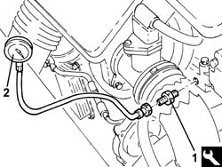

0510C20 lubrication system - check delivery pressure
- Path
- Procedures > 05 DIAGNOSTICS > 0510 VARIOUS CONTROLS > 0510C check systems > 0510C20 lubrication system - check delivery pressure
- Kind
- repair procedure (removal / refitting; the operation number is the code)
- Applies to
- all engines; all production periods
- Interactive page
- https://sloeber94.github.io/elrnDB-fPnd/en/#/2752395
Applies to: engines: 1.1, 1.2 8v; all production periods
Let the engine warm up (engine oil temperature 100° C).
1084A42 engine oil pressure warning light switch - r + r
1. Fit the connector in place of the low engine oil pressure switch.
 | Name | Country |
|---|---|---|
1 | Connector | 1.860.969.000 |
2. Connect a pressure gauge to the connector.

Applies to: engines: 1.3 JTD 16v; all production periods
Let the engine warm up (engine oil temperature 100° C).
1084A42 engine oil pressure warning light switch - r + r .
1. Fit the connector in the engine oil pressure warning light switch housing.
| Name | Country |
|---|---|---|
1 | Connector | 1.860.969.000 |
2. Connect a pressure gauge to the connector.

Applies to: engines: 1.1, 1.2 8v; all production periods
Start the engine only for the time required to check that the engine oil pressure is within the specified values.
 | Measurement | Value | |
|---|---|---|---|
- | Check delivery pressure (bar) | 0.7 | |
Idle speed (-) | - | ||
| Measurement | Value | |
|---|---|---|---|
- | Check delivery pressure (bar) | 4.0 | |
- (g/m.) | 4000 | ||
Remove the pressure gauge.
Remove the connector.
| Name | Country |
|---|---|---|
1 | Connector | 1.860.969.000 |
Applies to: engines: 1.3 JTD 16v; all production periods
Start the engine only for the time required to check that the engine oil pressure is within the specified values.
| Measurement | Value | |
|---|---|---|---|
- | Check delivery pressure (bar) | 1 | |
Idle speed (-) | - | ||
| Measurement | Value | |
|---|---|---|---|
- | Check delivery pressure (bar) | 3.0 ÷ 3.5 | |
- (g/m.) | 4000 | ||
Remove the pressure gauge.
Remove the connector.
| Name | Country |
|---|---|---|
- | Connector | 1.860.969.000 |